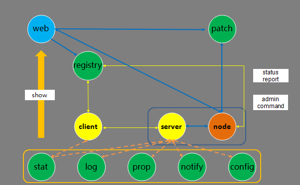
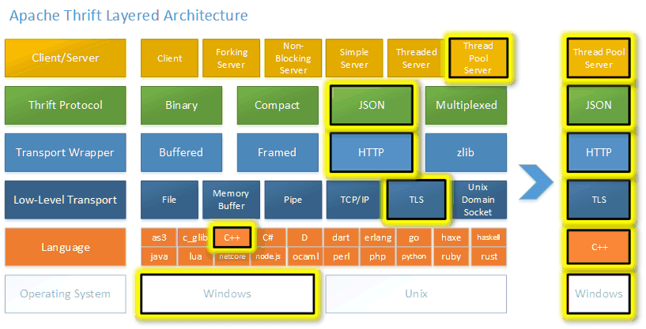

- 00 开篇词 微服务，从放弃到入门.md.html
- 01 到底什么是微服务？.md.html
- 02 从单体应用走向服务化.md.html
- 03 初探微服务架构.md.html
- 04 如何发布和引用服务？.md.html
- 05 如何注册和发现服务？.md.html
- 06 如何实现RPC远程服务调用？.md.html
- 07 如何监控微服务调用？.md.html
- 08 如何追踪微服务调用？.md.html
- 09 微服务治理的手段有哪些？.md.html
- 10 Dubbo框架里的微服务组件.md.html
- 11 服务发布和引用的实践.md.html
- 12 如何将注册中心落地？.md.html
- 13 开源服务注册中心如何选型？.md.html
- 14 开源RPC框架如何选型？.md.html
- 15 如何搭建一个可靠的监控系统？.md.html
- 16 如何搭建一套适合你的服务追踪系统？.md.html
- 17 如何识别服务节点是否存活？.md.html
- 18 如何使用负载均衡算法？.md.html
- 19 如何使用服务路由？.md.html
- 20 服务端出现故障时该如何应对？.md.html
- 21 服务调用失败时有哪些处理手段？.md.html
- 22 如何管理服务配置？.md.html
- 23 如何搭建微服务治理平台？.md.html
- 24 微服务架构该如何落地？.md.html
- 25 微服务为什么要容器化？.md.html
- 26 微服务容器化运维：镜像仓库和资源调度.md.html
- 27 微服务容器化运维：容器调度和服务编排.md.html
- 28 微服务容器化运维：微博容器运维平台DCP.md.html
- 29 微服务如何实现DevOps？.md.html
- 30 如何做好微服务容量规划？.md.html
- 31 微服务多机房部署实践.md.html
- 32 微服务混合云部署实践.md.html
- 33 下一代微服务架构Service Mesh.md.html
- 34 Istio：Service Mesh的代表产品.md.html
- 35 微博Service Mesh实践之路（上）.md.html
- 36 微博Service Mesh实践之路（下）.md.html
- 微博技术解密（上） 微博信息流是如何实现的？.md.html
- 微博技术解密（下）微博存储的那些事儿.md.html
- 结束语 微服务，从入门到精通.md.html
- 阿忠伯的特别放送 答疑解惑01.md.html
- 阿忠伯的特别放送 答疑解惑02.md.html
- 捐赠
14 开源RPC框架如何选型？
[专栏第6期]我给你讲解了RPC远程调用的原理，简单回顾一下一个完整的RPC框架主要有三部分组成：通信框架、通信协议、序列化和反序列化格式。根据我的经验，想要开发一个完整的RPC框架，并且应用到线上生产环境，至少需要投入三个人力半年以上的时间。这对于大部分中小团队来说，人力成本和时间成本都是不可接受的，所以我建议还是选择开源的RPC框架比较合适。
那么业界应用比较广泛的开源RPC框架有哪些呢？
简单划分的话，主要分为两类：一类是跟某种特定语言平台绑定的，另一类是与语言无关即跨语言平台的。
跟语言平台绑定的开源RPC框架主要有下面几种。
Dubbo：国内最早开源的RPC框架，由阿里巴巴公司开发并于2011年末对外开源，仅支持Java语言。
Motan：微博内部使用的RPC框架，于2016年对外开源，仅支持Java语言。
Tars：腾讯内部使用的RPC框架，于2017年对外开源，仅支持C++语言。
Spring Cloud：国外Pivotal公司2014年对外开源的RPC框架，仅支持Java语言，最近几年生态发展得比较好，是比较火的RPC框架。
而跨语言平台的开源RPC框架主要有以下几种。
gRPC：Google于2015年对外开源的跨语言RPC框架，支持常用的C++、Java、Python、Go、Ruby、PHP、Android Java、Objective-C等多种语言。
Thrift：最初是由Facebook开发的内部系统跨语言的RPC框架，2007年贡献给了Apache基金，成为Apache开源项目之一，支持常用的C++、Java、PHP、Python、Ruby、Erlang等多种语言。
所以很明显，如果你的业务场景仅仅局限于一种语言的话，可以选择跟语言绑定的RPC框架中的一种；如果涉及多个语言平台之间的相互调用，就应该选择跨语言平台的RPC框架。
针对每一种RPC框架，它们具体有何区别？该如何选择呢？接下来，我就从每个框架的实现角度来具体给你讲解。当你知道了他们的具体实现，也就能知道他们的优缺点以及适用场景了。
限定语言平台的开源RPC框架
1. Dubbo
先来聊聊Dubbo，Dubbo可以说是国内开源最早的RPC框架了，目前只支持Java语言，它的架构可以用下面这张图展示。
- （图片来源：https://dubbo.incubator.apache.org/docs/zh-cn/dev/sources/images/dubbo-relation.jpg）
从图中你能看到，Dubbo的架构主要包含四个角色，其中Consumer是服务消费者，Provider是服务提供者，Registry是注册中心，Monitor是监控系统。
具体的交互流程是Consumer一端通过注册中心获取到Provider节点后，通过Dubbo的客户端SDK与Provider建立连接，并发起调用。Provider一端通过Dubbo的服务端SDK接收到Consumer的请求，处理后再把结果返回给Consumer。
可以看出服务消费者和服务提供者都需要引入Dubbo的SDK才来完成RPC调用，因为Dubbo本身是采用Java语言实现的，所以要求服务消费者和服务提供者也都必须采用Java语言实现才可以应用。
我们再来看下Dubbo的调用框架是如何实现的。
通信框架方面，Dubbo默认采用了Netty作为通信框架。
通信协议方面，Dubbo除了支持私有的Dubbo协议外，还支持RMI协议、Hession协议、HTTP协议、Thrift协议等。
序列化格式方面，Dubbo支持多种序列化格式，比如Dubbo、Hession、JSON、Kryo、FST等。
2. Motan
Motan是国内另外一个比较有名的开源的RPC框架，同样也只支持Java语言实现，它的架构可以用下面这张图描述。
 -
（图片来源：https://github.com/weibocom/motan/wiki/media/14612352579675.jpg）
-
（图片来源：https://github.com/weibocom/motan/wiki/media/14612352579675.jpg）
Motan与Dubbo的架构类似，都需要在Client端（服务消费者）和Server端（服务提供者）引入SDK，其中Motan框架主要包含下面几个功能模块。
register：用来和注册中心交互，包括注册服务、订阅服务、服务变更通知、服务心跳发送等功能。Server端会在系统初始化时通过register模块注册服务，Client端会在系统初始化时通过register模块订阅到具体提供服务的Server列表，当Server列表发生变更时也由register模块通知Client。
protocol：用来进行RPC服务的描述和RPC服务的配置管理，这一层还可以添加不同功能的filter用来完成统计、并发限制等功能。
serialize：将RPC请求中的参数、结果等对象进行序列化与反序列化，即进行对象与字节流的互相转换，默认使用对Java更友好的Hessian 2进行序列化。
transport：用来进行远程通信，默认使用Netty NIO的TCP长链接方式。
cluster：Client端使用的模块，cluster是一组可用的Server在逻辑上的封装，包含若干可以提供RPC服务的Server，实际请求时会根据不同的高可用与负载均衡策略选择一个可用的Server发起远程调用。
3. Tars
Tars是腾讯根据内部多年使用微服务架构的实践，总结而成的开源项目，仅支持C++语言，它的架构图如下。
- （图片来源：https://github.com/TarsCloud/Tars/blob/master/docs/images/tars_jiaohu.png）
Tars的架构交互主要包括以下几个流程：
服务发布流程：在web系统上传server的发布包到patch，上传成功后，在web上提交发布server请求，由registry服务传达到node，然后node拉取server的发布包到本地，拉起server服务。
管理命令流程：web系统上的可以提交管理server服务命令请求，由registry服务传达到node服务，然后由node向server发送管理命令。
心跳上报流程：server服务运行后，会定期上报心跳到node，node然后把服务心跳信息上报到registry服务，由registry进行统一管理。
信息上报流程：server服务运行后，会定期上报统计信息到stat，打印远程日志到log，定期上报属性信息到prop、上报异常信息到notify、从config拉取服务配置信息。
client访问server流程：client可以通过server的对象名Obj间接访问server，client会从registry上拉取server的路由信息（如IP、Port信息），然后根据具体的业务特性（同步或者异步，TCP或者UDP方式）访问server（当然client也可以通过IP/Port直接访问server）。
4. Spring Cloud
Spring Cloud是为了解决微服务架构中服务治理而提供的一系列功能的开发框架，它是完全基于Spring Boot进行开发的，Spring Cloud利用Spring Boot特性整合了开源行业中优秀的组件，整体对外提供了一套在微服务架构中服务治理的解决方案。因为Spring Boot是用Java语言编写的，所以目前Spring Cloud也只支持Java语言平台，它的架构图可以用下面这张图来描述。
- （图片来源：http://www.hyhblog.cn/wp-content/uploads/2018/07/Arch-Design-Spring-Cloud-1024x576.png）
由此可见，Spring Cloud微服务架构是由多个组件一起组成的，各个组件的交互流程如下。
请求统一通过API网关Zuul来访问内部服务，先经过Token进行安全认证。
通过安全认证后，网关Zuul从注册中心Eureka获取可用服务节点列表。
从可用服务节点中选取一个可用节点，然后把请求分发到这个节点。
整个请求过程中，Hystrix组件负责处理服务超时熔断，Turbine组件负责监控服务间的调用和熔断相关指标，Sleuth组件负责调用链监控，ELK负责日志分析。
5. 对比选型
介绍完这4种限定语言的开源RPC框架后，我们该如何选择呢？
很显然，如果你的语言平台是C++，那么只能选择Tars；而如果是Java的话，可以选择Dubbo、Motan或者Spring Cloud。这时你又要问了，它们三个又该如何抉择呢？
仔细分析，可以看出Spring Cloud不仅提供了基本的RPC框架功能，还提供了服务注册组件、配置中心组件、负载均衡组件、断路器组件、分布式消息追踪组件等一系列组件，也难怪被技术圈的人称之为“Spring Cloud全家桶”。如果你不想自己实现以上这些功能，那么Spring Cloud基本可以满足你的全部需求。而Dubbo、Motan基本上只提供了最基础的RPC框架的功能，其他微服务组件都需要自己去实现。
不过由于Spring Cloud的RPC通信采用了HTTP协议，相比Dubbo和Motan所采用的私有协议来说，在高并发的通信场景下，性能相对要差一些，所以对性能有苛刻要求的情况下，可以考虑Dubbo和Motan。
跨语言平台的开源RPC框架
1. gRPC
先来看下gRPC，它的原理是通过IDL（Interface Definition Language）文件定义服务接口的参数和返回值类型，然后通过代码生成程序生成服务端和客户端的具体实现代码，这样在gRPC里，客户端应用可以像调用本地对象一样调用另一台服务器上对应的方法。
- （图片来源：https://grpc.io/img/landing-2.svg）
它的主要特性包括三个方面。
通信协议采用了HTTP/2，因为HTTP/2提供了连接复用、双向流、服务器推送、请求优先级、首部压缩等机制，所以在通信过程中可以节省带宽、降低TCP连接次数、节省CPU，尤其对于移动端应用来说，可以帮助延长电池寿命。
IDL使用了ProtoBuf，ProtoBuf是由Google开发的一种数据序列化协议，它的压缩和传输效率极高，语法也简单，所以被广泛应用在数据存储和通信协议上。
多语言支持，能够基于多种语言自动生成对应语言的客户端和服务端的代码。
2. Thrift
再来看下Thrift，Thrift是一种轻量级的跨语言RPC通信方案，支持多达25种编程语言。为了支持多种语言，跟gRPC一样，Thrift也有一套自己的接口定义语言IDL，可以通过代码生成器，生成各种编程语言的Client端和Server端的SDK代码，这样就保证了不同语言之间可以相互通信。它的架构图可以用下图来描述。
- （图片来源：https://github.com/apache/thrift/raw/master/doc/images/thrift-layers.png）
从这张图上可以看出Thrift RPC框架的特性。
支持多种序列化格式：如Binary、Compact、JSON、Multiplexed等。
支持多种通信方式：如Socket、Framed、File、Memory、zlib等。
服务端支持多种处理方式：如Simple 、Thread Pool、Non-Blocking等。
3. 对比选型
那么涉及跨语言的服务调用场景，到底该选择gRPC还是Thrift呢？
从成熟度上来讲，Thrift因为诞生的时间要早于gRPC，所以使用的范围要高于gRPC，在HBase、Hadoop、Scribe、Cassandra等许多开源组件中都得到了广泛地应用。而且Thrift支持多达25种语言，这要比gRPC支持的语言更多，所以如果遇到gRPC不支持的语言场景下，选择Thrift更合适。
但gRPC作为后起之秀，因为采用了HTTP/2作为通信协议、ProtoBuf作为数据序列化格式，在移动端设备的应用以及对传输带宽比较敏感的场景下具有很大的优势，而且开发文档丰富，根据ProtoBuf文件生成的代码要比Thrift更简洁一些，从使用难易程度上更占优势，所以如果使用的语言平台gRPC支持的话，建议还是采用gRPC比较好。
总结
以上就是我对几种使用最广泛的开源RPC框架的选型建议，也是基于它们目前现状所作出的判断，从长远来看，支持多语言是RPC框架未来的发展趋势。正是基于此判断，各个RPC框架都提供了Sidecar组件来支持多语言平台之间的RPC调用。
Dubbo在去年年底又重启了维护，并且宣称要引入Sidecar组件来构建Dubbo Mesh提供多语言支持。
Motan也在去年对外开源了其内部的Sidecar组件：Motan-go，目前支持PHP、Java语言之间的相互调用。
Spring Cloud也提供了Sidecar组件spring-cloud-netflix-sideca，可以让其他语言也可以使用Spring Cloud的组件。
所以未来语言不会成为使用上面这几种RPC框架的约束，而gRPC和Thrift虽然支持跨语言的RPC调用，但是因为它们只提供了最基本的RPC框架功能，缺乏一系列配套的服务化组件和服务治理功能的支撑，所以使用它们作为跨语言调用的RPC框架，就需要自己考虑注册中心、熔断、限流、监控、分布式追踪等功能的实现，不过好在大多数功能都有开源实现，可以直接采用。
思考题
同样是支持跨语言的RPC调用，你觉得gRPC这类的跨语言服务框架和Motan-go这类的Sidecar方案有什么区别？在使用过程中都需要注意什么？
欢迎你在留言区写下自己的思考，与我一起讨论。
© 2019 - 2023 Liangliang Lee. Powered by gin and hexo-theme-book.